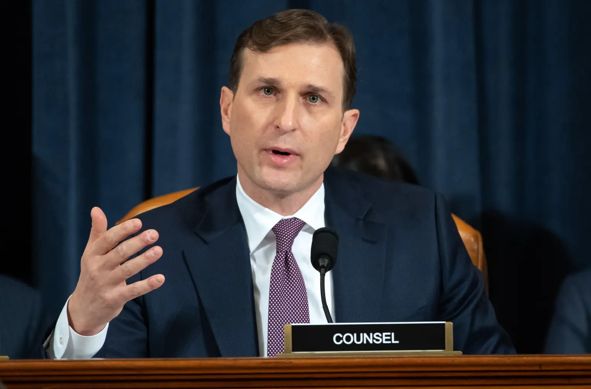
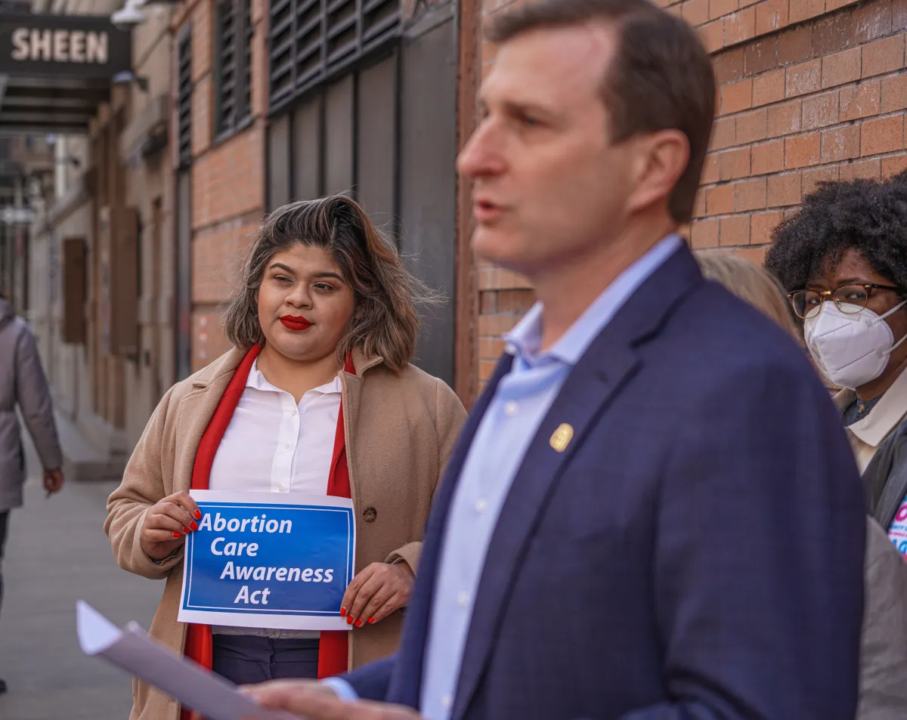
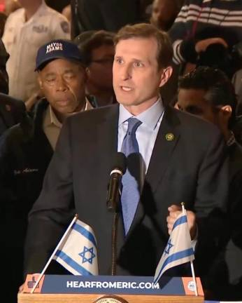

Congressman Daniel Goldman’s stance on Gen Z’s most pressing issues

Daniel Goldman serves as lead counsel in the first impeachment of former President Donald Trump. Getty Images
October 5, 2024 | By Anushka Dakshit
Congressman Daniel Goldman is a member of the Democratic Party and, since 2022, has represented New York’s 10th congressional district. Born in Washington D.C., Goldman completed law school at Yale University before becoming assistant United States attorney in the Southern District of New York from 2007-2017. Goldman’s past experience includes working in criminal justice reform, network and cable television law and organized crime and white collar prosecutions. However, a lot of young, newer voters in Lower Manhattan and western Brooklyn, where his constituents live, might not know much about Goldman. Below is a breakdown of policy positions Goldman’s holds in regards to issues Gen Z is most passionate about.
Abortion rights and reproductive healthcare

Daniel Goldman talks to a group of supporters about his Abortion Care Awareness Act. Dean Moses. am NY
Congressman Goldman is a member of the Pro-Choice Caucus and has introduced to Congress the Abortion Care Awareness Act in March 2024, which increases access to medically accurate information about abortion.
In July 2024, he joined Congresswoman Ayanna Pressley to introduce the Affordability is Access Act, which would push major American pharmacies to sell the abortion pill, mifepristone and make it more affordable.
In regards to the Supreme Court’s decision to overturn Roe v. Wade, Goldman has said, “This fight is simply too important to give up.”
Israel and Palestine Conflict

Daniel Goldman attends a vigil held for the victims of Oct. 7 in Israel. Instagram/repdangoldman
Goldman voted to support Israel and sent arms to it after the 2023 Hamas attack on Israel. He has said that he will ensure Israel has “continued security and prosperity.”
Goldman supports the two state solution and believes that the BDS movement is antisemitic. Goldman says that Palestinians should achieve statehood without violence while Israel must provide more economic opportunity and self-reliance to Palestine.
However, Goldman also believes that Israel’s occupation of Gaza has been regressive to further peace deals.
LGBTQ+ Issues
Daniel Goldman attends Team NY Aquatics Pride Parade in 2022. Twitter/danielsgoldman
Goldman supports the passing of the Equality Act to protect the rights of the LGBTQIA+ community and prevent discrimination based on sexual orientation and gender identity. In introducing the act, Goldman said, “It is imperative that we institute comprehensive, decisive protections for LGBTQ+ individuals at the federal level.”
In June 2023, Goldman urged the Department of Housing to distribute housing funds planning and community organizations that supported taking action against housing discrimination against LGBTQ+ seniors.
Climate change
Goldman believes that climate change is an urgent issue that must be addressed comprehensively.
Goldman supports the Green New Deal to transition to clean energy. Goldman also promotes partnerships between public and private companies to invest in renewable energy and use public power and community as a means of production.
In April 2024, Goldman introduced the "Homeland Security Climate Change Coordination Act", which would help the Department of Homeland Security in their efforts to create a Climate Coordinating Council. The council would analyze the impact of climate change on DHS programs and make recommendations on what DHS can do to mitigate the impacts of climate change.